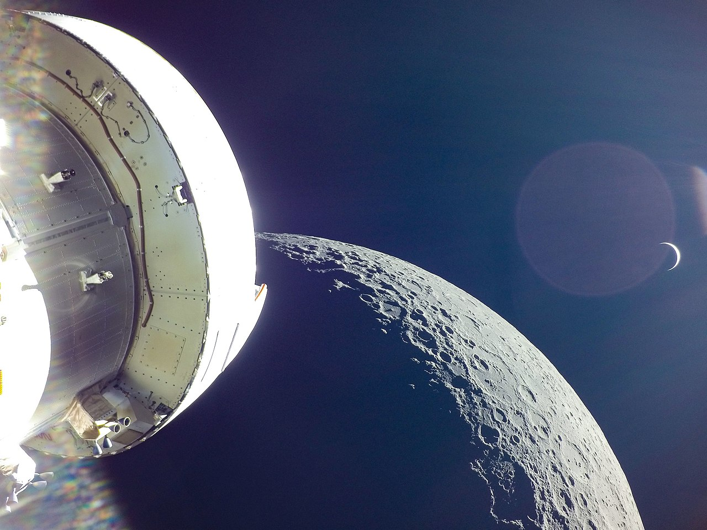
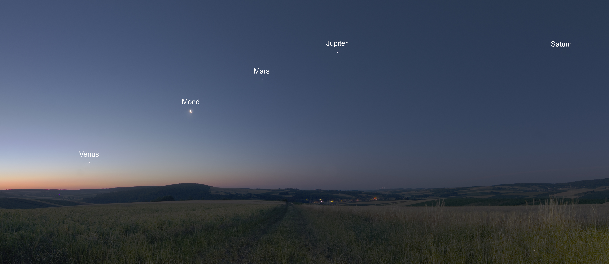
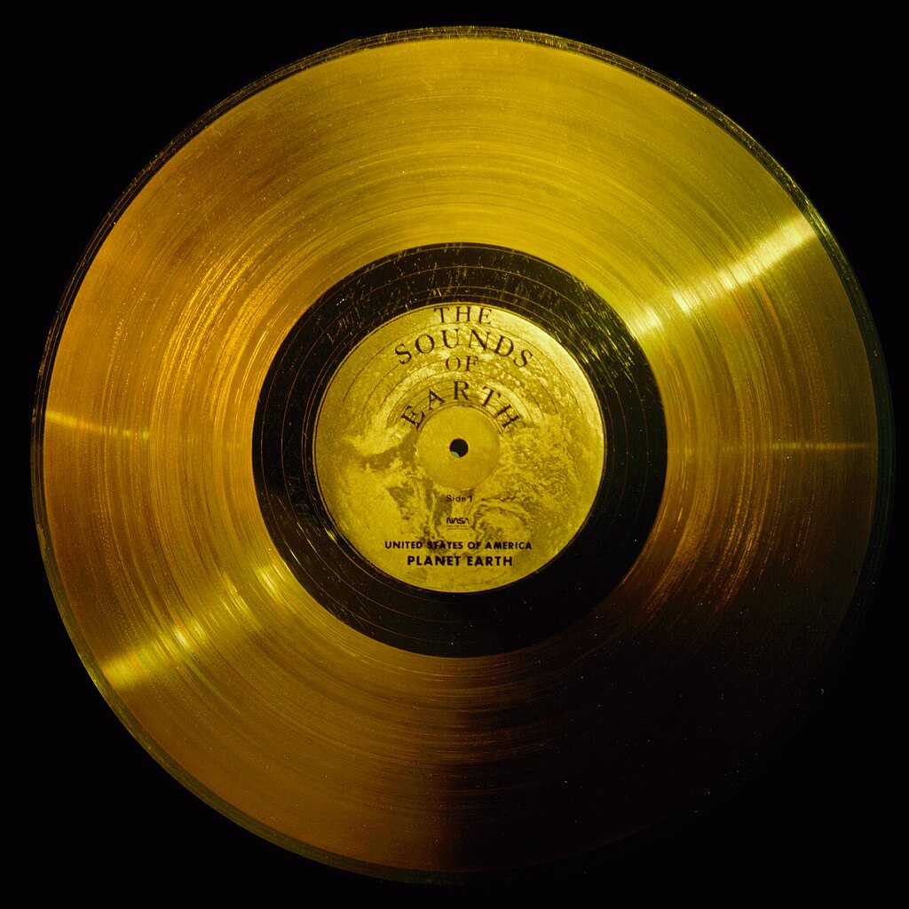

UniverseTrip Tour -
Highlights
Erkunde das Universum vom Erde-Mond System bis an die Grenzen des sichtbaren Universums. Diese Tour veranschaulicht die Entfernungen und Positionen der eindrucksvollsten Objekte des Nachthimmels.
Radius: 0.0000001 Lichtjahre

Der Radius 0.0000001 Lj entspricht ~3,2 Lichtsekunden.
Das Erde-Mond System ist sichtbar. Der Mond umkreist in einem Abstand von ca. 384.400 km (~1,3 Lichtsekunden) die Erde und ist mit ca. 3.470 km rund 1/4 so groß wie die Erde.

Die tatsächlichen Größenverhältnisse kann man anhand der folgenden Abbildung besser abschätzen. Sowohl die Durchmesser als auch der Abstand Erde - Mond sind im gleichen Maßstab dargestellt.

Die Apollo 11 Mission im Jahr 1969 war die erste bemannte Mondlandung der Menschheit. Die Reise zum Mond dauerte etwa 76 Stunden (3 Tage und 4 Stunden).
Die nachfolgende Abbildung zeigt die Orion Kapsel von Artemis I mit der aufgehenden Erde über dem Horizont des Mondes.

Radius: 0.000001 Lichtjahre

Der Radius 0.000001 Lj entspricht ~32 Lichtsekunden.
Das Erde-Mond System ist weiterhin sichtbar. Die blau eingezeichnete Planetenbahn lässt bereits jetzt eine kreisartige Form um die Sonne erahnen. Ansonsten weitgehend leerer Raum.
Radius: 0.00001 Lichtjahre

Der Radius 0.00001 Lj entspricht ~5,3 Lichtminuten.
In diesem dargestelltem Maßstab lassen sich Erde und Mond kaum mehr als einzelne Punkte erkennen. Die Orbits (blaue Linien) der Nachbarplaneten Mars, Venus und Merkur ganz rechts, werden allmählich sichtbar.
Radius: 0.0001 Lichtjahre

Der Radius 0.0001 Lj entspricht 53 Lichtminuten. Das Licht benötigt von der Sonne ca. 8,3 Minuten bis zur Erde.
Das innere Sonnensystem mit den Gesteinsplaneten Merkur, Venus, Erde und Mars sowie der Sonne im Zentrum unseres Sonnensystems ist sichtbar.
Aufgrund von physikalischen Zusammenhängen in der Entstehung des Sonnensystems aus einer Staub- und Gaswolke (innen heiß, außen kalt) entstanden die Gesteinsplaneten im inneren Sonnensystem relativ nahe zur Sonne, während die Gasriesen Jupiter, Saturn, Uranus und Neptun im äußeren Sonnensystem liegen.
Die nachfolgende Abbbildung zeigt die Gesteinsplaneten Merkur, Venus, Erde und Mars im richtigen Größenverhältnis.

Radius: 0.001 Lichtjahre

Der Radius 0.001 Lj entspricht 8,8 Lichtstunden.
Die inneren Gesteinsplaneten sind jetzt nur mehr als kleine Kreise nahe der Sonne sichtbar. Die Gasriesen Jupiter, Saturn, Uranus und Neptun, der Zwergplanet Pluto sowie deren Kreisbahnen um die Sonne (in blau) sind nun deutlich erkennbar.
Das nachstehende Bild zeigt die Größenverhältnisse aller Planeten im Sonnensystem inklusive der Sonne und Pluto.

Am Nachthimmel sind die Planeten Merkur, Venus, Mars, Jupiter und Saturn sowie der Mond mit bloßem Auge sichtbar. Diese Planeten bewegen sich relativ zu den Sternen und werden daher auch als "Wandelsterne" bezeichnet. Die anderen Planeten sind nur mit Teleskopen sichtbar.

Radius: 0.01 Lichtjahre

In diesem Maßstab sind die entferntesten, von Menschenhand gemachten Objekte, erkennbar. Die Raumsonden Voyager 1 und 2, Pioneer 10 und 11 sowie New Horizons verlassen das Sonnensystem und begeben sich auf eine Reise in den Kosmos, bei der sie wohl niemand jemals stoppen wird.
Die Raumsonde Voyager 1 ist dabei das am weitest entfernte Objekt. Sie wurde 1977 zur Erkundung des äußeren Sonnensystems gestartet und ist seitdem über 45 Jahre unterwegs. Derzeit ist die Sonde ca. 25 Milliarden Kilometer von der Erde entfernt. Das Licht benötigt für diese Entfernung ca. 23 Stunden.

Den beiden Raumsonden Voyager 1 und 2 wurden goldene Schallplatten mit Informationen über die Erde und die Menschheit mitgegeben. Diese Platten enthalten Musik, Bilder und Grüße in verschiedenen Sprachen, um mögliche extraterrestrische Lebensformen über die Menschheit zu informieren.

Radius: 0.1 Lichtjahre

Das Sonnensystem und die Raumsonden sind in diesem Maßstab kaum mehr als einzelne Objekte wahrnehmbar. Ansonsten nahezu leerer Raum.
Radius: 1 Lichtjahr

Der Radius der Darstellung beträgt 1 Lichtjahr. Das Licht der Sonne ist bis zum äußersten Entfernungskreis ein Jahr unterwegs. In dieser Entfernung finden wir weitgehend leeren Raum vor.
Unser Sonnensystem und die Raumsonden sind nur noch als einzelner Punkt erkennbar.
Radius: 10 Lichtjahre

Im Radius von 10 Lichtjahren werden die Nachbarsterne unserer Sonne sichtbar. In dieser Simulation sind die 20 nächsten Sterne dargestellt. Proxima Centauri ist mit 4,2 Lichtjahren Entfernung der nächstgelegene Stern. Er umkreist den relativ hellen Stern Alpha Centauri.
Proxima Centauri ist aufgrund seiner Position von Europa aus nicht sichtbar.
Der Stern Sirius ist der hellste Stern am gesamten Nachthimmel.
Prokyon im Sternbild kleiner Hund ist ebenfalls relativ hell und daher gut erkennbar.
Viele der weiteren Nachbarsterne sind sehr lichtarm und daher keine auffälligen Sterne am Nachthimmel.
Nachfolgende Nighscape Aufnahme zeigt die beiden Sterne Sirius im Sternbild Großer Hund sowie Prokyon im Kleinen Hund.

Erwähnenswert ist auch Barnards Pfeilstern, der sich so schnell an der Sonne vorbei bewegt, dass wir seine Wanderung über die Jahre gegenüber den Sternen im Hintergrund verfolgen können.
Radius: 100 Lichtjahre

Während die 20 Nachbarsterne der Sonne in der Mitte der Simulation noch erkennbar sind, wird in diesem Maßstab ein Teil der 100 hellsten Sterne am Nachthimmel sichtbar. Ein paar der bekannstesten sind Kapella (Sternbild Fuhrmann), Aldebaran (Sternbild Stier), Regulus (Sternbild Löwe) oder Pollux (Sternbild Zwillinge).
Radius: 1.000 Lichtjahre

Die 100 hellsten Sterne unseres Nachthimmels sind jetzt abgebildet. Sie sind als helle, auffallende Sterne sichtbar. Polaris (unser derzeitige Nordstern) hat eine besondere Rolle, da er fast genau in der Erdachse steht und damit die Nordrichtung als auch die geografische Breite einfach zu bestimmen sind. Er diente seit jahrhunderten den Seefahrern zur Navigation.
Zusätzlich zu den Sternen, gibt es auch unzählige weitere Objekte am Nachthimmel zu sehen. Große galaktische Nebel, Planetarische Nebel, Kugelsternhaufen oder auch offene Sternhaufen kann man mit Teleskopen entdecken. In diesem Maßstab sind bereits die ersten Objekte dieser Art sichtbar. Das Objekt Messier 45 (die Plejaden) ist ein gut sichtbarer offener Sternhaufen im Sternbild Stier.
Radius: 10.000 Lichtjahre

Im Radius von ca. 10.000 Lj befinden sich alle Sterne, die wir mit freiem Auge als einzelne Sterne auflösen können. Alle weiteren Sterne unserer Heimatgalaxie, der Milchstraße, erscheinen uns als nebelförmiges Band, das sich vom restlichen dunklem Nachthimmel abhebt - das Milchstrßenband.
Weitere interessante Objekte sind der Orionnebel (Messier 42) und UY Scuti, der bisher größte bekannt Stern. Folgende Abbildungen zeigen den Orionnebel und ein Größenvergleich zwischen unserer Sonne und UY Scuti.
Radius: 100.000 Lichtjahre

Placeholder für weitere Informationen.
Radius: 1.000.000 Lichtjahre

Placeholder für weitere Informationen.
Radius: 10.000.000 Lichtjahre

Placeholder für weitere Informationen.
Radius: 100.000.000 Lichtjahre

Placeholder für weitere Informationen.
Radius: 1.000.000.000 Lichtjahre

Placeholder für weitere Informationen.
Radius: 10.000.000.000 Lichtjahre

Placeholder für weitere Informationen.
Radius: 50.000.000.000 Lichtjahre

Placeholder für weitere Informationen.
Sources
[1] Gemeinfrei, https://commons.wikimedia.org/w/index.php?curid=264039
[2] CC BY 2.5, https://commons.wikimedia.org/w/index.php?curid=1109958
[3] By Mercury image: NASA/JHUAPLVenus image: NASA/Johns Hopkins University Applied Physics Laboratory/Carnegie Institution of Washington Earth image: NASA/Apollo 17 crew, retouch by User:Aaron1a12Mars image: ESA/MPS/UPD/LAM/IAA/RSSD/INTA/UPM/DASP/IDA - Mercury Globe-MESSENGER mosaic centered at 0degN-0degE.jpg Venus 2 Approach Image.jpgThe Blue Marble (remastered).jpgOSIRIS Mars true color.jpg, Public Domain, https://commons.wikimedia.org/w/index.php?curid=92818238
[4] By File:Solar system scale 2 wide.jpg: * File:Solar system scale.jpg: Lunar and Planetary LaboratoryFile:Jupiter and its shrunken Great Red Spot.jpg: NASA, ESA, and A. Simon (Goddard Space Flight Center)derivative work: Martin KraftFile:Sun in February (transparent).png: HalloweenNightderivative work: JCPagc2015 - This file was derived from:Solar system scale 2 wide.jpg:Sun in February (transparent).png:, Public Domain, https://commons.wikimedia.org/w/index.php?curid=71869737
[5] By NASA/JPL - http://solarsystem.nasa.gov/multimedia/display.cfm?IM_ID=2194 (file), Public Domain, https://commons.wikimedia.org/w/index.php?curid=126674
[6] By NASA - Great Images in NASA Description, Public Domain, https://commons.wikimedia.org/w/index.php?curid=6455682
[7] By NASA Johnson - https://www.flickr.com/photos/nasa2explore/52547389828/in/album-72177720303788800/, Public Domain, https://commons.wikimedia.org/w/index.php?curid=126510287
[8] By Markus Kerbl - https://www.astrobin.com/7vt9xw/
[9] By Markus Kerbl - https://www.astrobin.com/5trv3m/
[10] By Alejandro Sanz Gómez - http://www.astrosurf.com/asanz/EBAR.htm, CC BY-SA 2.5 es, https://commons.wikimedia.org/w/index.php?curid=10732343
[11] By Markus Kerbl - https://www.astrobin.com/jdx1xp/
[12] By Markus Kerbl - https://www.astrobin.com/xs7g3z/
[13] Placeholder: Source for UY Scuti comparison